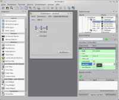
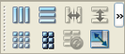

Qt Designer
Dieser Artikel wurde für die folgenden Ubuntu-Versionen getestet:
Ubuntu 14.04 Trusty Tahr
Zum Verständnis dieses Artikels sind folgende Seiten hilfreich:
Qt Designer  ist ein WYSIWYG-Editor zur Erstellung von grafischen Benutzeroberflächen (GUIs) mit Hilfe der Bibliothek Qt. Qt verfolgt das Model View Controller Konzept. D.h. die Beschreibung der Oberfläche enthält keine Logik und ist es nicht erforderlich - wenn auch möglich - diese manuell zu programmieren. Hervorzuheben ist, dass eine mit dem Designer erstellte Oberfläche nicht an eine Programmiersprache gebunden ist, sondern ohne Änderung bspw. sowohl in einer C++, als auch einer Python Anwendung verwendet werden kann (siehe Qt Anbindungen). Die Oberflächenbeschreibung wird in einer XML-Datei gespeichert und ist somit auch für den Menschen lesbar und bedingt ohne den Qt Designer veränderbar.
ist ein WYSIWYG-Editor zur Erstellung von grafischen Benutzeroberflächen (GUIs) mit Hilfe der Bibliothek Qt. Qt verfolgt das Model View Controller Konzept. D.h. die Beschreibung der Oberfläche enthält keine Logik und ist es nicht erforderlich - wenn auch möglich - diese manuell zu programmieren. Hervorzuheben ist, dass eine mit dem Designer erstellte Oberfläche nicht an eine Programmiersprache gebunden ist, sondern ohne Änderung bspw. sowohl in einer C++, als auch einer Python Anwendung verwendet werden kann (siehe Qt Anbindungen). Die Oberflächenbeschreibung wird in einer XML-Datei gespeichert und ist somit auch für den Menschen lesbar und bedingt ohne den Qt Designer veränderbar.
Mit dem Qt Designer ist es nicht nur möglich, die Oberfläche zu erstellen, sondern es können den verwendeten Qt Elementen Variablen und Werte zugeordnen werden. Zusätzlich können die Signale und Slots der Elemente miteinander verknüpft werden. Der Quellcode, der zur Oberfläche gehört, wird automatisch während des Buildvorgangs der Qt Anwendung erstellt. Des Weiteren ist Qt Designer in der Entwicklungsumgebung Qt Creator integriert.
|  |
| Qt Designer |
Installation¶
Qt Designer kann direkt aus den Quellen installiert werden [1]:
qt4-designer
 mit apturl
mit apturl
Paketliste zum Kopieren:
sudo apt-get install qt4-designer
sudo aptitude install qt4-designer
Das Programm kann über den Eintrag "Entwicklung -> Qt 4 Designer" oder innerhalb von Qt Creator gestartet werden.
Bedienung¶
Wird Qt Designer als eigenständige Anwendung gestartet, erscheint ein Assistent, über den verschiedene Fenster und Dialoge anhand von Vorlagen erstellt werden können. Der Designer bietet vier verschiedene Bearbeitungs-Modi, die in der Werkzeugleiste ausgewählt werden können:
| Bearbeitungs-Modi | ||||
| Symbol | Name | Taste | Beschreibung | Anleitung |
| "Widgets bearbeiten" | F3 | Qt- (und falls vorhanden KDE-) Elemente per Drag & Drop auf dem Fenster platzieren. | Doku | |
 | "Signale und Slots bearbeiten" | F4 | Widgets per Drag & Drop über Signale und Slots verbinden. | Doku |
 | "Buddies bearbeiten" | Für QLabels kann ein Tastenkürzel vergeben werden (vorangestelltes &). Bspw.: &Name ergibt Name und ist über
Alt +
N zu erreichen. Definiert man für dieses Label per Drag & Drop einen "Buddy" (z.B. QLineEdit), so wird dieses Element automatisch bei Betätigung des Tastenkürzel des Labels markiert. | Doku | |
 | "Tabulatorreihenfolge bearbeiten" | Festlegen in welcher Reihenfolge die Widgets bei Druck auf Tab ⇆ markiert werden. | Doku | |
Die "Objektanzeige" liestet alle auf dem Fenster platzierten Elemente in einer Baumstruktur auf. Durch  können verschiedene Eigenschaften des Elements schnell erreicht und angepasst werden, bspw. Größe oder das Layout. Wurde ein Element markiert, können im Bereich "Eigenschaften" alle zum Element gehörenden Optionen geändert werden. Unter "Ressourcen" kann eine Ressourcen-Datei (.qrc) erstellt und bearbeitet werden. Dadurch ist eine einfache Verwaltung der eingebundenen Ressourcen (Bilder, Symboldateien, etc.) möglich.
können verschiedene Eigenschaften des Elements schnell erreicht und angepasst werden, bspw. Größe oder das Layout. Wurde ein Element markiert, können im Bereich "Eigenschaften" alle zum Element gehörenden Optionen geändert werden. Unter "Ressourcen" kann eine Ressourcen-Datei (.qrc) erstellt und bearbeitet werden. Dadurch ist eine einfache Verwaltung der eingebundenen Ressourcen (Bilder, Symboldateien, etc.) möglich.
Über den "Aktionseditor" können QActions verwaltet und erstellt werden. Aktionen können bspw. Menüeinträge oder Schaltflächen in einer Werkzeugleiste sein. Erstellt man einen Menüeintrag, erscheint diese Aktion automatisch im Aktionseditor. Zusätzlich ist es möglich, eine Aktion im Editor zu erstellen und diese per Drag & Drop in einer Werkzeugleiste oder einem Menü zu platzieren. Des Weiteren können über den Editor Eigenschaften der Aktion (z.B. Tooltip, Symbol oder Tastenkürzel) definiert werden.
Qt Designer verfügt über unterschiedliche Vorschaumöglichkeiten. Zum einen kann über "Formular -> Vorschau..." oder Strg + R die Vorschau der GUI angezeigt werden, zum anderen stehen unter "Formular -> Vorschau im" von Qt unterstützte Stile für die Vorschau zur Auswahl, bspw. Oxygen, Windows oder GTK+.
Signale und Slots¶
Das Signal-Slot-Konzept realisiert einen ereignisgesteuerten Programmfluss bzw. eine ereignisgesteuerte Kommunikation zwischen Programmelementen. Elemente (oder Aktionen) müssen hierzu miteinander verknüpft werden. Ein Element sendet nach bestimmten Ereignissen (z.B. nach einem  ) ein Signal, woraufhin der verbundene Slot (Funktion) eines anderen Elements aufgerufen wird. Diese Verknüpfungen können teilweise mit Hilfe des Qt Designers vogenommen werden. Teilweise deshalb, da der Designer lediglich die vordefinierten Qt Funktionen der Elemente unterstützt. Benutzerdefinierte Signale und Slots können nicht über die grafische Oberfläche miteinander verbunden werden.
) ein Signal, woraufhin der verbundene Slot (Funktion) eines anderen Elements aufgerufen wird. Diese Verknüpfungen können teilweise mit Hilfe des Qt Designers vogenommen werden. Teilweise deshalb, da der Designer lediglich die vordefinierten Qt Funktionen der Elemente unterstützt. Benutzerdefinierte Signale und Slots können nicht über die grafische Oberfläche miteinander verbunden werden.
Es besteht entweder die Möglichkeit in den Signale und Slots Modus zu wechseln und die Elemente per Drag & Drop zu verbinden. Hierbei erscheint ein Dialog, der die elementspezifischen Signale und Slots anzeigt und zur Auswahl stellt. Alternativ kann man den Reiter "Signale und Slots" rechts unten im Designer verwenden. Zum einen hat man dort eine Übersicht aller definierten Verbindungen, zum anderen kann man über "+" und "-" Verbindungen erstellen und entfernen. Bei der Erstellung einer neuen Verknüpfung können über Dropdown-Listen alle zur Verfügung stehenden Elemente ("Sender" und "Empfänger") gewählt werden, sowie die dazugehörigen "Signale" und "Slots". Ausführliche Informationen zu diesem Thema liefert die offizielle Dokumentation .
Layout¶
Wird eine Benutzeroberfläche mit Qt erstellt, empfiehlt es sich Layouts zu verwenden. Dies stellt sicher, dass Objekte auch dann korrekt dargestellt werden, sobald ein Fenster vergrößert oder verkleinert wird und die Anwendung auf verschiedenen Platformen ausgeführt wird. Zuerst sollte ein Hauptlayout definiert werden. Hierzu markiert man das Hauptfenster und klickt auf die gewünschte Schaltfläche, um die Objekte anzuordnen. Gleiches kann im Folgenden für einzelne Widgetgruppen getan werden, nachdem man die gewünschten Widgets durch Ziehen eines Rahmens bei gedrückter Maustaste markiert hat. Alle erzeugten Layouts erscheinen ebenfalls in der "Objektanzeige" und können über das "Eigenschaften"-Fenster weiter angepasst werden. Weiterführende Hinweise sind der offiziellen Anleitung zu entnehmen. Die folgenden Typen stehen zur Auswahl:
|  |
| Layout Schaltflächen |
Waagerecht / senkrecht: Die einfachste Art der Anordnung. Die Widgets werden waagerecht oder senkrecht ausgerichtet. Beide Arten können kombiniert und verschachtelt angewendet werden.
Tabellarisch ("Grid"): Für komplexere Layouts. Hierbei hat der Entwickler sehr viele Freiheiten und das Layout ist übersichtlicher als verschachtelte waagerechte und senkrechte Layouts, jedoch kann u. U. die Flexibilität darunter leiden.
Waagerechter / senkrechter Splitter: Die Widgets werden waagerecht oder senkrecht wie beim ersten Typ ausgerichtet, jedoch besteht zusätzlich die Möglichkeit die Größe des Platzes / Freiraums rund um das Objekt zu definieren.
- Erstellt mit Inyoka
-
 2004 – 2017 ubuntuusers.de • Einige Rechte vorbehalten
2004 – 2017 ubuntuusers.de • Einige Rechte vorbehalten
Lizenz • Kontakt • Datenschutz • Impressum • Serverstatus -
Serverhousing gespendet von